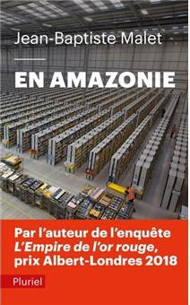

Amazon détruit les emplois
(Retrouvez les 30 bonnes raisons de stopper Amazon)
Amazon a détruit plus de 20 000 emplois dans nos commerces en France !
Pour 1 emploi créé chez Amazon, 2,2 sont perdus dans le commerce de proximité (rapport Mounir Mahjoubi 2019)
Amazon détruit plus d’emplois qu’elle n’en crée.
Et quels emplois !- Cadences harassantes, les pickers font + de 20 km par jour, pauses minimales
- Abus d’utilisation des intérimaires (jusqu’aux 2/3 des effectifs)
- Contrats précaires et sous-traitance
- Des rémunérations inférieures à celles pratiquées dans le secteur
- Contrôles permanents : pression, délation et surveillance
Sur le site de Montélimar, les salariés en CDI ne restent pas plus de 2,5 ans en moyenne (voir ici).
Amazon maltraite les salariés (voir ici) : les syndromes d’épuisement, les accidents du travail et les licenciements pour inaptitude sont fréquents. En France en 2020, Amazon ne voulait pas respecter les règles sanitaires du Covid. Aux Etats-Unis, Amazon a subi des procès pour des licenciements de femmes enceintes.
Le but d’Amazon est de remplacer les salariés par des robots (voir ici). Les cadences sont définies par des algorithmes.
Amazon impose des conditions qui obligent les prestataires et les concurrents à les adopter.
Les livraisons ultra-rapides entraînent une dégradation des conditions de travail à l’intérieur d’Amazon mais aussi à l’extérieur (voir ici).
C’est le film de Ken Loach Sorry We Missed You partout !
Près de Rouen, des livreurs d’un sous-traitant ont été virés en fin de période d’essai :
« Fin décembre, j’ai vu que je n’étais plus sur le planning de la semaine suivante. C’est comme ça que j’ai compris que j’étais viré ». (source)
Avec la suppression des emplois de vendeurs en magasin, l’automatisation, les cadences ultra-rapides et les économies d’échelle dans les méga-entrepôts, pour chaque emploi qu’Amazon crée, c’est plus de 2 emplois qu’elle détruit en France (plus de 4,5 aux Etats-Unis).
Amazon est un danger pour les emplois dans les commerces de proximité et dans la grande distribution. Les entreprises familiales et les emplois non délocalisables sont en danger. D’après M. Mahjoubi, Amazon va détruire plus de 7900 emplois en France à court terme.
« À chiffre d’affaires équivalent, les entrepôts d’Amazon embauchent 2,2 fois moins de salariés que les commerçants traditionnels. Son activité de retail (la vente au détail de produits stockés par ses soins, ndlr), soit hors Marketplace, a potentiellement supprimé 10 400 emplois dans le commerce de proximité (en équivalent temps plein)”, écrit Mounir Mahjoubi. “Marketplace comprise, ce seraient 20 200 postes en moins. » (source)
Les fermetures des commerces de proximité auront de graves conséquences sur la vitalité des centres-villes, le lien social, les services de proximité, et plus globalement l’attractivité d’un territoire.
Le pire est encore à venir, si nous n’y prenons garde :
- Amazon Flex aux USA : ces travailleurs du clic travaillent à leur domicile, sur leur propre ordinateur, sans aucun statut ni contrat de travail et pour une rémunération dérisoire
- Amazon Go : des magasins sans caisse dans lequel les clients sont identifiés grâce à une application
- A lire :
- Jean-Baptiste Malet (2019), En Amazonie, Pluriel